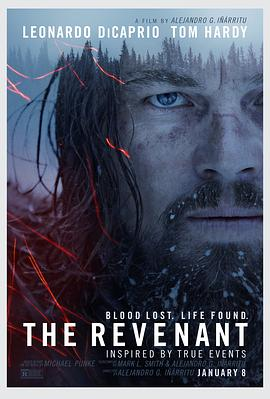

荒野猎人 / The Revenant
又名：复仇勇者(港) / 神鬼猎人(台) / 还魂者 / 亡魂 / 归来者
演技还是那样的演技，只是遭罪是遭了影帝那份罪
作品信息
| 导演 | 亚历杭德罗·冈萨雷斯·伊尼亚里图 |
| 编剧 | 马克·L·史密斯 / 亚历杭德罗·冈萨雷斯·伊尼亚里图 / 迈克尔·庞克 |
| 主演 | 莱昂纳多·迪卡普里奥 / 汤姆·哈迪 / 多姆纳尔·格里森 / 威尔·保尔特 / 福勒斯特·古德勒克 / 保罗·安德森 / 克里斯托弗·约纳尔 / 约书亚·博格 / 杜安·霍华德 / 梅劳·纳克霍克 / 亚瑟·雷德克劳德 / 克里斯托弗·罗莎蒙德 / 罗伯特·莫隆尼 / 卢卡斯·哈斯 / 布伦丹·弗莱彻 / 伊曼纽尔·比洛多 / 汤姆·盖里 / 斯科特·奥林克 / 格蕾丝·德芙 / 阿德里安·格林·麦莫伦 / 哈维尔·博泰特 / 布拉德·卡特 / 雷·蔡斯 / 查尔斯·法西 / 杰伊·塔瓦尔 / 迈克尔·维拉尔 |
| 类型 | 剧情 / 动作 / 冒险 |
| 制片国家/地区 | 美国 / 中国香港 / 中国台湾 |
| 语言 | 英语 / 波尼语 / 法语 |
| 上映日期 | 2016-03-18(中国大陆) / 2015-12-16(美国加州) / 2016-01-08(美国) |
| 片长 | 156分钟 |
| IMDb | tt1663202 |
最后一次看到是 2026-08-12T21:12:24+08:00 · 豆瓣原页